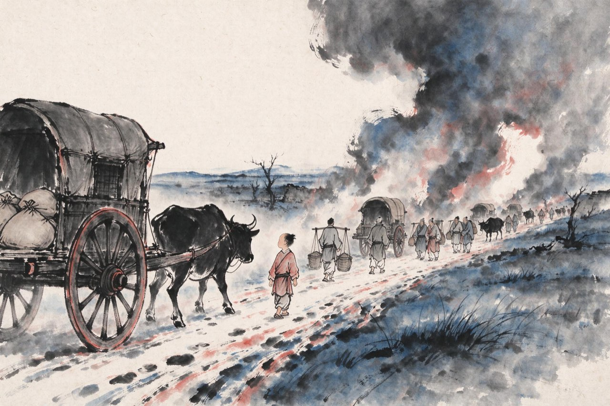
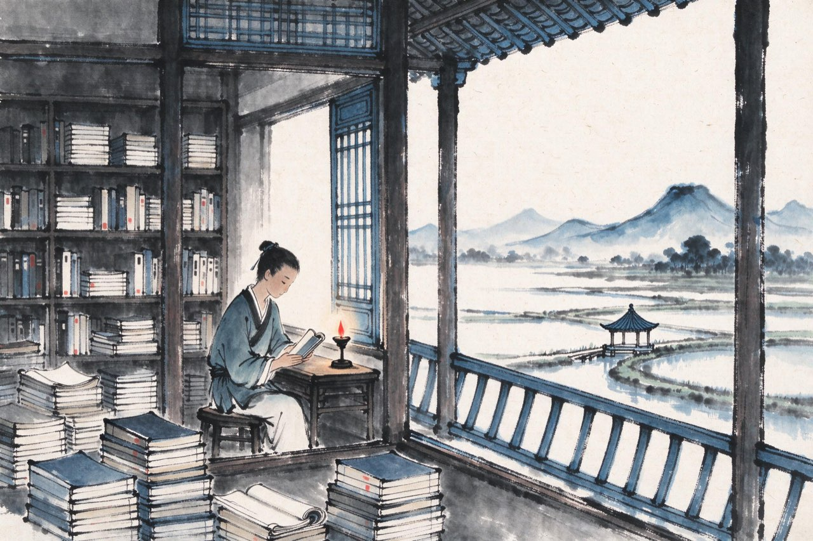

陆游 · 1125-1143
山阴
藏书楼
生于淮上
宣和七年十月，你出生在淮河的一条船上。
父亲陆宰，这一年带着全家渡淮北上。船到中流，你啼哭落地——北方正是大变前夜：金人已灭辽国，铁骑调头向南，两国之间的和平，只剩最后几个月。
你没有赶上太平年月的尾巴。你的出生地不是宅院，是一条漂在乱局里的船；你的时代，从第一声啼哭起，就在倾覆。
淮水汤汤。这条船后来载着一个家族南来北往许多年，而船上的这个婴儿，将用八十五年，等一个来不了的消息。
注
- 陆游生于舟中，自述诗文可证其生于旅途；确切成年月与地点，各家年谱略有出入，通行从宣和七年十月淮上

学步逢丧乱
你两岁那年，金兵破汴京。第二年春天，徽宗、钦宗二帝被掳北去——北宋没有了。
中原成了溃散之地。父亲带着一家老小南奔，在兵荒马乱里辗转：舟车换了几程，藏身之处换了几处，你后来只记得一些碎影——拥挤的船舱、陌生的城门、大人压低的语声。
你学会走路，就是在这样的一条条路上。多年以后你写：我生学步逢丧乱，家在中原厌奔窜。
最后，全家回到越州山阴，故乡。江南的水田、石桥、鉴湖，接住了这个奔逃的家庭——从此，山阴是你一生反复归来的原点。
注
- 《三山杜门作歌》为晚年追忆童年之作；奔逃具体路线，诸家年谱考订不一，此处从简叙述

藏书楼
山阴的家安顿下来。父亲不做官的那些年，把心思全放在藏书上——经史百家，碑帖典籍，积至万余卷，堆满楼屋。南渡的士人家里，这样规模的书楼，屈指可数。
你就在书堆里长大。读书快，记性好，骑竹马的年纪已经在楼里翻大部头。客人来家，见一个孩子守着满壁书卷，都不免多看一眼。
但你读的不只是诗文。北方的地图、边防的旧事、前朝用兵的成败——这些没人逼你读，你自己找来读。中原是怎么丢的，你在一堆堆纸页之间，一点一点弄明白了。
楼外是江南的湖田，楼内是沦陷的天下。少年合上书，望着窗外，心里的志向清楚得近乎狂妄：总有一天，要打回去。
注
- 父陆宰为南宋著名藏书家，家藏书万余卷，见于山阴陆氏藏书诸记载
- 少年从军恢复之志，陆游诗中屡有追忆；习剑读兵书，俱在山阴少年时